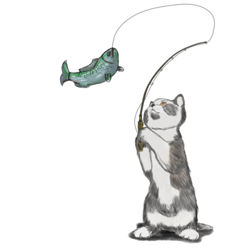
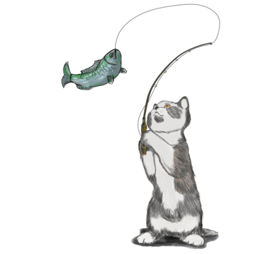

Who:
You and the fish
 You (fishing) This is what a fish looks like
This is what a fish looks like
AI Prompts Used: "Who is involved in fishing?"
You and the fish
 You (fishing)
This is what a fish looks like
Fishing is the activity of catching fish, either as a means of sustenance or for recreation. It involves various methods, including angling with a rod, line, and hook, using nets or traps, or spearing fish. Fishing is a prehistoric practice that provides food and employment for millions of people globally and is also a popular recreational activity
AI Prompts Used: "What is fishing?"The best time for fishing is typically early morning and late evening, as fish are more active in the lower light conditions of dawn and dusk. However, the ideal time can vary depending on factors like water temperature, weather, tides, and the specific species you are targeting. Midday can be productive when fish are seeking shade, and night fishing is also excellent for many species.
Personally, I like to fish whenever I so please.
AI Prompts Used: "When is the best time for fishing?"Fish live in water, so fishing is done near bodies of water like lakes, rivers, or oceans
To fish, first prepare your line by tying a hook, weights, and a bobber, then bait the hook. Next, find a good spot, cast your line, and wait patiently for a fish to bite the bait. When you feel a bite, quickly pull the rod tip up to set the hook and then reel your catch in slowly and steadily.
One should fish for recreation, as a healthy food source, to connect with nature, and to support conservation efforts. Fishing provides physical and mental health benefits, such as stress reduction and improved concentration, while also offering an opportunity to spend quality time with loved ones and gain a sustainable food source rich in protein and omega-3 fatty acids.
AI Prompts Used: "Why should one fish?"